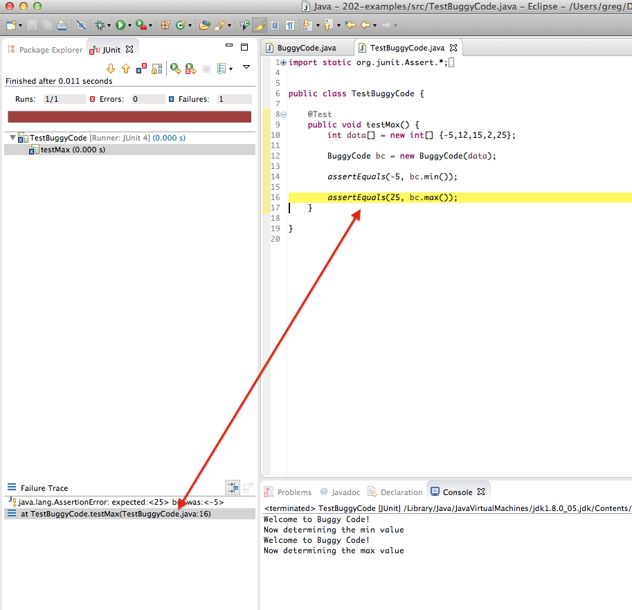
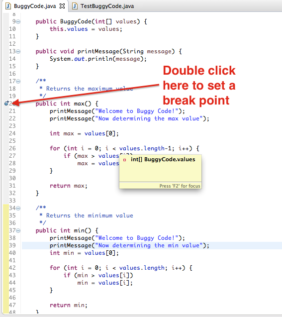
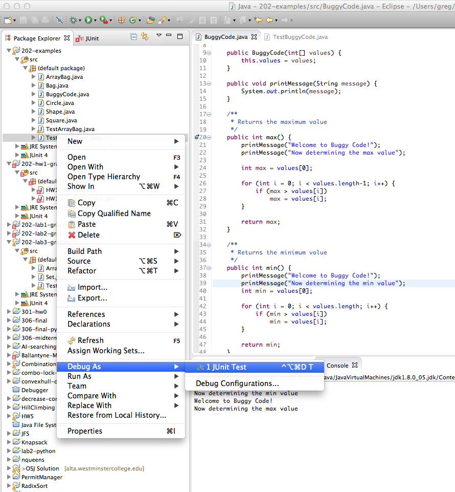
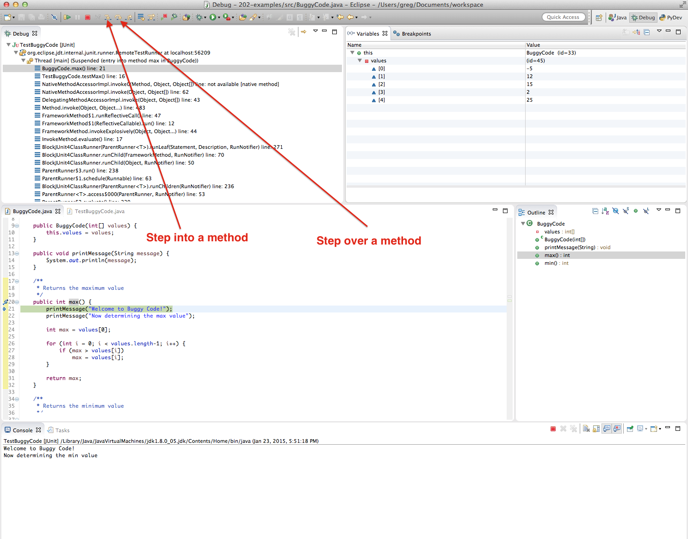
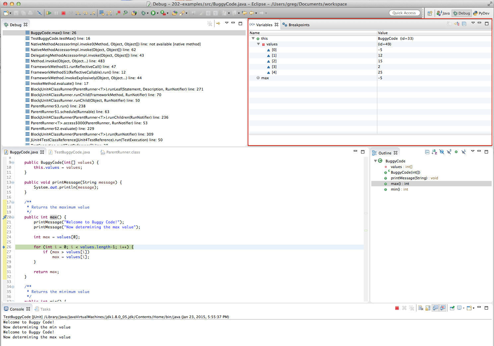
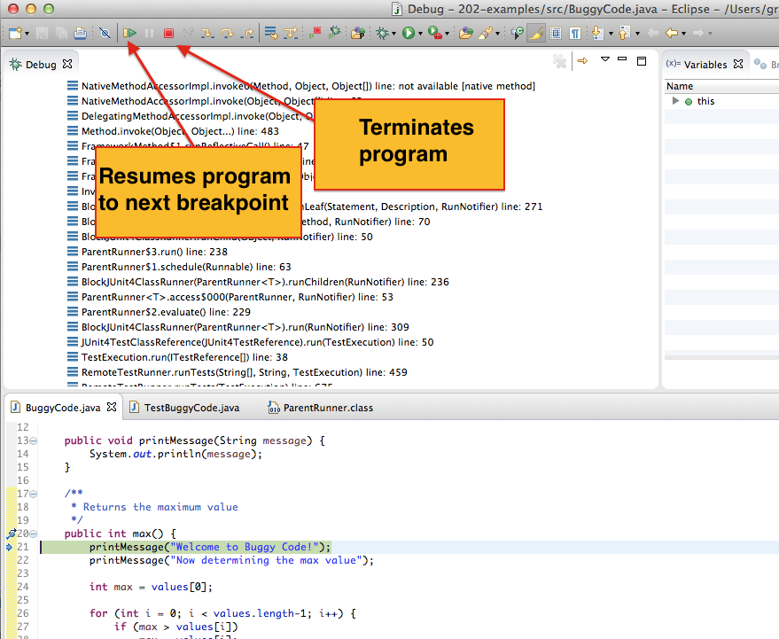

Eclipse Debugger
This will present an overview of how to use the debugger in Eclipse
A debugger allows you to step through code on a line-by-line basis and
observe how data changes value. The Eclipse debugger is a relatively
simple, yet quite powerful, tool to use.
This overview uses the following two class files:
- BuggyCode.java (The
buggy code we will debug.)
- TestBuggyCode.java
(Unit tests.)
Let's assume you have run TestBuggyCode
and the unit tests indicate the
following error:

The unit tests tells you what line in the unit test that failed. In
this situation it is line 16 of the unit test which calls the max()
method in the BuggyCode
class.
We will have to set up the debugger so that we can step through the
buggy code line by line. We do this by setting a breakpoint at the max()
method in the BuggyCode
class. A breakpoint is a
stoppage point when running a program.

After we have set a breakpoint, we will run the unit test again,
however this time running it under the debugger:

The debugger will run each line of code until it reaches the breakpoint
- in this case the max()
method in the BuggyCode
class.
Once we reach a breakpoint, we can then step through each line of code
line by line. There are in fact a few ways of stepping through code,
however. If a line of code calls another method, we can either step into that method, or step over it. Stepping into a method
allows us to step through that method line by line. However, if there
are no known problems with that method, it is usually best to step over
it which has the effect of running the method, but not requiring the
developer to step through it line by line.
In this case we have the contrived printMessage()
method which has no bugs, so we will step over that method:

After we step over the calls to printMessage(),
we
will step into each of the remaining lines of code in the max()
method. This allows us to examine the variables and their values as we
step through each line of code.

There are two other buttons that are useful - one that resumes program
execution to the next break point (you can have multiple breakpoints)
and another that terminates program execution.

A useful
link with good Eclipse practices